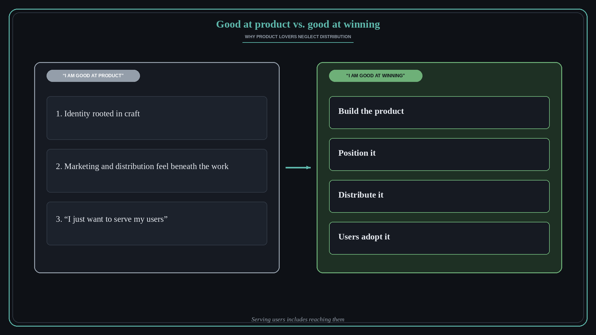

Good at product is not the same as good at winning
Source: Shreyas Doshi (@shreyas)
original post
What it claims
Shreyas Doshi posted a periodic reminder that the more you love building products, the greater the odds you carry a particular bias. In a follow-up he explained why it catches smart people: (1) a deep-rooted identity of “I am good at product” rather than “I am good at winning”, (2) a moral aversion to marketing and distribution, and (3) a habit of seeking virtue points by proclaiming “I just want to serve my users.”
Why it matters for a PO
A PO who treats launch, positioning, sales enablement, and adoption as someone else's job can ship a strong product that few people ever reach. Serving users includes getting the product in front of them and making it easy to choose. Anchoring your identity in outcomes rather than craft keeps distribution inside your definition of done.
3 takeaways
- Define your job as winning with users, not as building something you are proud of.
- Marketing and distribution are part of the product, not a lesser activity beside it.
- Watch for “I just want to serve users” being used to skip the work of reaching them.
Practice this week
For your next release, write a one-page distribution plan next to the spec: who needs to hear about it, through which channel, and what will make them try it. Review it with your marketing or sales partner before the sprint review.